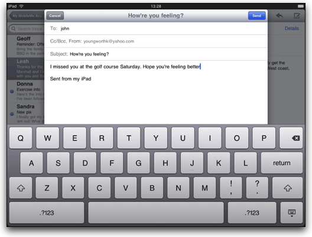

The Window is an empty drawing surface or container.
A window is a top-level container which can contain other views. Windows can be opened and closed. Opening a window causes the window and its child views to be added to the application's render stack, on top of any previously opened windows. Closing a window removes the window and its children from the render stack.
Windows contain other views, but in general they are not contained inside other views. There are a few specialized top-level views that manage windows, including:
By default, windows occupy the entire screen except for the navigation bar,
status bar, and in the case of windows contained in tab groups, the tab bar.
To take up the entire screen, covering any other UI, specify fullscreen:true
when creating the window.
Use the Titanium.UI.createWindow method to create a window.
Windows can be loaded from another JavaScript file by specifying the property url,
referencing a file relative to your application Resources folder. It's important
to note that Titanium will refuse to load JavaScript files from a remote URL. Loading
remote JavaScript from a URL and providing it with the full capabilities of the Titanium
API would be very dangerous.
When your Window is loaded from a separate JavaScript file, the code will be executed in
a separate JavaScript context (called a "sub-context") than your app.js global context.
It will also execute in its own separate thread.
On Android, a new context is also created when you create a heavyweight window. See the section, "Android Heavyweight and Lightweight Windows" for more information.
The special property Titanium.UI.currentWindow is available inside a sub-context that
points to the JavaScript instance by reference in the global context.
By default, sub-context variables cannot access JavaScript references in the global context. There are two ways to pass data between the global context and the sub-context:
Note that in both cases, you cannot pass functions between contexts, only serializable data. Serializable data includes any JavaScript primitive or simple object composed of JavaScript primitives.
You can allow a sub-context access to properties in the global context by reference assignment. An example best illustrates how to do this.
In app.js, you could define a property:
var message = "Hi world!";
Now, you can create a new Window - let's call it foo.js - in your app.js.
var w = Titanium.UI.createWindow({
url:'foo.js'
});
To give your new window access to message, you would need to assign it to a
property on the new window reference, w.
w.alertMessage = message;
This creates a new alertMessage property on the new window that holds a reference to the
message property in the global context. Now, let's look at the code for foo.js.
alert(Titanium.UI.currentWindow.alertMessage);
In the above code, the foo.js will show an alert containing the text from the message
property in the global context.
If you'd like to send events to a window from the global context and vice versa, you could
use the built-in event mechanism. For example, you could define a custom event called foo.
The window could listen for this event and then respond with some action. For example, in
your sub-context you might define:
Titanium.UI.currentWindow.addEventListener('foo',function(e)
{
Titanium.API.info("foo event received = "+JSON.stringify(e));
});
You could now fire the event from app.js like this:
var window = Titanium.UI.createWindow({
url:'bar.js'
});
window.open();
window.fireEvent('foo',{a:'b'});
It's worth noting two important limitations of the example above:
You must open the window before you can send events to it. You also may have to fire the event after a specified amount of time if you intend to immediately send data to the window. This is because windows are opened asynchronously and on a separate thread than the caller thread.
You can only send JSON-serializable data in fireEvent. If you attempt to send objects
that have function references, they will be null.
Windows can be animated like any normal View. To transition between
2 windows, you can use the transition property on an animation. For example, to flip
right-to-left between two windows, you could do the following:
var window2 = Titanium.UI.createWindow({url:'foo.js'});
var t = Ti.UI.iPhone.AnimationStyle.FLIP_FROM_LEFT;
window1.animate({view:window2,transition:t});
In the above example, the window2 view will be animated from the right-to-left over window1.
Windows can be opened or closed with animation. In the example below, we create a window that will open from small to large with a bounce effect. This is done by applying a transformation at initialization time that scales the original size of the window to 0. When the window is opened, a new 2D transformation is applied that will scale the window size from 0 to 110% of it's original size and then, after 1/20th of a second, will scale it back to it's original size at 100%. This gives the bounce effect during animation.
var t = Titanium.UI.create2DMatrix().scale(0);
// create a window with the initial transform scaled to 0
var w = Titanium.UI.createWindow({
backgroundColor:'#336699',
borderWidth:8,
borderColor:'#999',
height:400,
width:300,
borderRadius:10,
opacity:0.92,
transform:t
});
// create first transform to go beyond normal size
var t1 = Titanium.UI.create2DMatrix().scale(1.1);
var a = Titanium.UI.createAnimation();
a.transform = t1;
a.duration = 200;
// when this animation completes, scale to normal size
a.addEventListener('complete', function()
{
// we can use the identity transform to take it back to it's real size
var t2 = Titanium.UI.create2DMatrix();
w.animate({transform:t2, duration:200});
});
For iPad, iPhone SDK 3.2 and Titanium 1.2 introduced several new ways of presenting modal windows. In addition to full-screen modal windows, the iPad supports "Page sheet" and "Form sheet" style windows:
Page sheet style windows have a fixed width, equal to the width of the screen in portait mode, and a height equal to the current height of the screen. This means that in portrait mode, the window covers the entire screen. In landscape mode, the window is centered on the screen horizontally.
Form sheet style windows are smaller than the screen size, and centered on the screen.
The example below is a modal window using the Form sheet style:

You can create this type of modal window on iPad with the following code snippet:
var window = Titanium.UI.createWindow();
window.open({
modal:true,
modalTransitionStyle: Ti.UI.iPhone.MODAL_TRANSITION_STYLE_FLIP_HORIZONTAL,
modalStyle: Ti.UI.iPhone.MODAL_PRESENTATION_FORMSHEET
})
In Android, Titanium windows can be heavyweight or lightweight:
A heavyweight window is associated with a new Android Activity. Creating a heavyweight window always creates a new JavaScript context.
A lightweight window is a fullscreen view, and runs in the same Android Activity as the code that created it. Creating a lightweight window creates a new JavaScript context if it was created with the 'url' property set.
The createWindow call creates a heavyweight window if any of the following properties are true on creation:
fullscreennavBarHiddenmodalwindowSoftInputModeA heavyweight window is always created when you open a new window from inside a TabGroup.
In Android, you may wish to specify that a window which you create (such as the first window) should be considered the root window and that the application should exit when the back button is pressed from that window. This is particularly useful if your application is not using a Tab Group and therefore the splash screen window is appearing whenever you press the back button from your lowest window on the stack.
To indicate that a particular window should cause an application to exit when the back
button is pressed, pass exitOnClose: true as one of the creation arguments, as shown here:
var win = Titanium.UI.createWindow({
title: 'My Root Window',
exitOnClose: true
});
Create a fullscreen window with a red background.
var window = Titanium.UI.createWindow({
backgroundColor:'red'
});
window.open({fullscreen:true});
| Name | Type | Summary |
|---|---|---|
| activity | Titanium.Android.Activity | For heavyweight windows, this property contains a reference to theAndroid Activity object associated with this window. |
| anchorPoint | Point | Coordinate of the view about which to pivot an animation. |
| animatedCenterPoint | Point | Current position of the view during an animation. |
| backButtonTitle | String | Title for the back button. This is only valid when the window is a child of a tab. |
| backButtonTitleImage | String Titanium.Blob | The image to show as the back button. This is only valid when the window is a child of a tab. |
| backgroundColor | String | Background color of the view, as a color name or hex triplet. |
| backgroundDisabledColor | String | Disabled background color of the view, as a color name or hex triplet. |
| backgroundDisabledImage | String | Disabled background image for the view, specified as a local file path or URL. |
| backgroundFocusedColor | String | Focused background color of the view, as a color name or hex triplet. |
| backgroundFocusedImage | String | Focused background image for the view, specified as a local file path or URL. |
| backgroundGradient | Gradient | A background gradient for the view. |
| backgroundImage | String | Background image for the view, specified as a local file path or URL. |
| backgroundLeftCap | Number | Size of the left end cap. |
| backgroundRepeat | Boolean | Determines whether to tile a background across a view. |
| backgroundSelectedColor | String | Selected background color of the view, as a color name or hex triplet. |
| backgroundSelectedImage | String | Selected background image url for the view, specified as a local file path or URL. |
| backgroundTopCap | Number | Size of the top end cap. |
| barColor | String | Background color for the nav bar, as a color name or hex triplet. |
| barImage | String | Background image for the nav bar, specified as a URL to a local image. |
| borderColor | String | Border color of the view, as a color name or hex triplet. |
| borderRadius | Number | Border radius of the view. |
| borderWidth | Number | Border width of the view. |
| bottom | Number String | View's bottom position, in platform-specific units. |
| center | Point | View's center position, in the parent view's coordinates. |
| children | Array<Titanium.UI.View> | Array of this view's child views. |
| exitOnClose | Boolean | Boolean value indicating if the application should exit when the AndroidBack button is pressed while the window is being shown. |
| focusable | Boolean | Whether view should be focusable while navigating with the trackball. |
| fullscreen | Boolean | Boolean value indicating if the window is fullscreen. |
| height | Number String | View height, in platform-specific units. |
| horizontalWrap | Boolean | Determines whether the layout has wrapping behavior. |
| keepScreenOn | Boolean | Determines whether to keep the device screen on. |
| layout | String | Specifies how the view positions its children. One of: 'composite', 'vertical', or 'horizontal'. |
| left | Number String | View's left position, in platform-specific units. |
| leftNavButton | Titanium.UI.View | View to show in the left nav bar area. |
| modal | Boolean | Boolean to indicate if the window should be opened modal in front of other windows. |
| navBarHidden | Boolean | For modal windows, hide the nav bar ( |
| opacity | Number | The opacity from 0.0-1.0. |
| orientation | Number | Current orientation of the window. |
| orientationModes | Array<Number> | Array of supported orientation modes, specified using the orientationconstants defined in |
| rect | Dimension | The bounding box of the view relative to its parent, in system units. |
| right | Number String | View's right position, in platform-specific units. |
| rightNavButton | Titanium.UI.View | View to show in the right nav bar area. |
| size | Dimension | The size of the view in system units. |
| softKeyboardOnFocus | Number | Determines keyboard behavior when this view is focused. |
| tabBarHidden | Boolean | Boolean value indicating if the tab bar should be hidden. |
| title | String | Title of the window. |
| titleControl | Titanium.UI.View | View to show in the title area of the nav bar. |
| titleImage | String | Image to show in the title area of the nav bar, specified as a local file path or URL. |
| titlePrompt | String | Title prompt for the window. |
| titleid | String | Key identifying a string from the locale file to use for the window title. |
| titlepromptid | String | Key identifying a string from the locale file to use for the window title prompt. |
| toolbar | Array<Object> | Array of button objects to show in the window's toolbar. This is only valid whenthe window is the child of a tab. |
| top | Number String | The view's top position. |
| touchEnabled | Boolean | Determines whether view should receive touch events. |
| transform | Titanium.UI.2DMatrix Titanium.UI.iOS.3DMatrix | Transformation matrix to apply to the view. |
| translucent | Boolean | Boolean value indicating if the nav bar is translucent. |
| url | String | Local URL to a JavaScript file with the windows instructions. |
| visible | Boolean | Determines whether the view is visible. |
| width | Number String | View's width, in platform-specific units. |
| windowPixelFormat | Number | Set the pixel format for the Activity's Window. |
| windowSoftInputMode | Number | Determines whether a heavyweight window's soft input area (ie software keyboard) is visible as it receives focus and how the window behaves in order to accomodate it while keeping its contents in view. |
| zIndex | Number | Z-index stack order position, relative to other sibling views. |
| Name | Summary |
|---|---|
| add | Adds a child to this view's hierarchy. |
| addEventListener | Adds the specified callback as an event listener for the named event. |
| animate | Animates this view. |
| close | Closes the window. |
| convertPointToView | Translates a point from this view's coordinate system to another view's coordinate system. |
| finishLayout | Finishes a batch update of the View's layout properties and schedules a layout pass of the view tree. |
| fireEvent | Fires a synthesized event to any registered listeners. |
| getActivity | Gets the value of the activity property. |
| getAnchorPoint | Gets the value of the anchorPoint property. |
| getAnimatedCenterPoint | Gets the value of the animatedCenterPoint property. |
| getBackButtonTitle | Gets the value of the backButtonTitle property. |
| getBackButtonTitleImage | Gets the value of the backButtonTitleImage property. |
| getBackgroundColor | Gets the value of the backgroundColor property. |
| getBackgroundDisabledColor | Gets the value of the backgroundDisabledColor property. |
| getBackgroundDisabledImage | Gets the value of the backgroundDisabledImage property. |
| getBackgroundFocusedColor | Gets the value of the backgroundFocusedColor property. |
| getBackgroundFocusedImage | Gets the value of the backgroundFocusedImage property. |
| getBackgroundGradient | Gets the value of the backgroundGradient property. |
| getBackgroundImage | Gets the value of the backgroundImage property. |
| getBackgroundLeftCap | Gets the value of the backgroundLeftCap property. |
| getBackgroundRepeat | Gets the value of the backgroundRepeat property. |
| getBackgroundSelectedColor | Gets the value of the backgroundSelectedColor property. |
| getBackgroundSelectedImage | Gets the value of the backgroundSelectedImage property. |
| getBackgroundTopCap | Gets the value of the backgroundTopCap property. |
| getBarColor | Gets the value of the barColor property. |
| getBarImage | Gets the value of the barImage property. |
| getBorderColor | Gets the value of the borderColor property. |
| getBorderRadius | Gets the value of the borderRadius property. |
| getBorderWidth | Gets the value of the borderWidth property. |
| getBottom | Gets the value of the bottom property. |
| getCenter | Gets the value of the center property. |
| getChildren | Gets the value of the children property. |
| getExitOnClose | Gets the value of the exitOnClose property. |
| getFocusable | Gets the value of the focusable property. |
| getFullscreen | Gets the value of the fullscreen property. |
| getHeight | Gets the value of the height property. |
| getHorizontalWrap | Gets the value of the horizontalWrap property. |
| getKeepScreenOn | Gets the value of the keepScreenOn property. |
| getLayout | Gets the value of the layout property. |
| getLeft | Gets the value of the left property. |
| getLeftNavButton | Gets the value of the leftNavButton property. |
| getModal | Gets the value of the modal property. |
| getNavBarHidden | Gets the value of the navBarHidden property. |
| getOpacity | Gets the value of the opacity property. |
| getOrientation | Gets the value of the orientation property. |
| getOrientationModes | Gets the value of the orientationModes property. |
| getRect | Gets the value of the rect property. |
| getRight | Gets the value of the right property. |
| getRightNavButton | Gets the value of the rightNavButton property. |
| getSize | Gets the value of the size property. |
| getSoftKeyboardOnFocus | Gets the value of the softKeyboardOnFocus property. |
| getTabBarHidden | Gets the value of the tabBarHidden property. |
| getTitle | Gets the value of the title property. |
| getTitleControl | Gets the value of the titleControl property. |
| getTitleImage | Gets the value of the titleImage property. |
| getTitlePrompt | Gets the value of the titlePrompt property. |
| getTitleid | Gets the value of the titleid property. |
| getTitlepromptid | Gets the value of the titlepromptid property. |
| getToolbar | Gets the value of the toolbar property. |
| getTop | Gets the value of the top property. |
| getTouchEnabled | Gets the value of the touchEnabled property. |
| getTransform | Gets the value of the transform property. |
| getTranslucent | Gets the value of the translucent property. |
| getUrl | Gets the value of the url property. |
| getVisible | Gets the value of the visible property. |
| getWidth | Gets the value of the width property. |
| getWindowPixelFormat | Gets the value of the windowPixelFormat property. |
| getWindowSoftInputMode | Gets the value of the windowSoftInputMode property. |
| getZIndex | Gets the value of the zIndex property. |
| hide | Hides this view. |
| hideTabBar | Hides the tab bar. Must be called before opening the window. |
| open | Opens the window. |
| remove | Removes a child view from this view's hierarchy. |
| removeEventListener | Removes the specified callback as an event listener for the named event. |
| setActivity | Sets the value of the activity property. |
| setAnchorPoint | Sets the value of the anchorPoint property. |
| setBackButtonTitle | Sets the value of the backButtonTitle property. |
| setBackButtonTitleImage | Sets the value of the backButtonTitleImage property. |
| setBackgroundColor | Sets the value of the backgroundColor property. |
| setBackgroundDisabledColor | Sets the value of the backgroundDisabledColor property. |
| setBackgroundDisabledImage | Sets the value of the backgroundDisabledImage property. |
| setBackgroundFocusedColor | Sets the value of the backgroundFocusedColor property. |
| setBackgroundFocusedImage | Sets the value of the backgroundFocusedImage property. |
| setBackgroundGradient | Sets the value of the backgroundGradient property. |
| setBackgroundImage | Sets the value of the backgroundImage property. |
| setBackgroundLeftCap | Sets the value of the backgroundLeftCap property. |
| setBackgroundRepeat | Sets the value of the backgroundRepeat property. |
| setBackgroundSelectedColor | Sets the value of the backgroundSelectedColor property. |
| setBackgroundSelectedImage | Sets the value of the backgroundSelectedImage property. |
| setBackgroundTopCap | Sets the value of the backgroundTopCap property. |
| setBarColor | Sets the value of the barColor property. |
| setBarImage | Sets the value of the barImage property. |
| setBorderColor | Sets the value of the borderColor property. |
| setBorderRadius | Sets the value of the borderRadius property. |
| setBorderWidth | Sets the value of the borderWidth property. |
| setBottom | Sets the value of the bottom property. |
| setCenter | Sets the value of the center property. |
| setFocusable | Sets the value of the focusable property. |
| setFullscreen | Sets the value of the fullscreen property. |
| setHeight | Sets the value of the height property. |
| setHorizontalWrap | Sets the value of the horizontalWrap property. |
| setKeepScreenOn | Sets the value of the keepScreenOn property. |
| setLayout | Sets the value of the layout property. |
| setLeft | Sets the value of the left property. |
| setLeftNavButton | Sets the value of the leftNavButton property. |
| setModal | Sets the value of the modal property. |
| setNavBarHidden | Sets the value of the navBarHidden property. |
| setOpacity | Sets the value of the opacity property. |
| setOrientation | Sets the value of the orientation property. |
| setOrientationModes | Sets the value of the orientationModes property. |
| setRight | Sets the value of the right property. |
| setRightNavButton | Sets the value of the rightNavButton property. |
| setSoftKeyboardOnFocus | Sets the value of the softKeyboardOnFocus property. |
| setTabBarHidden | Sets the value of the tabBarHidden property. |
| setTitle | Sets the value of the title property. |
| setTitleControl | Sets the value of the titleControl property. |
| setTitleImage | Sets the value of the titleImage property. |
| setTitlePrompt | Sets the value of the titlePrompt property. |
| setTitleid | Sets the value of the titleid property. |
| setTitlepromptid | Sets the value of the titlepromptid property. |
| setToolbar | Sets the value of the toolbar property. |
| setTop | Sets the value of the top property. |
| setTouchEnabled | Sets the value of the touchEnabled property. |
| setTransform | Sets the value of the transform property. |
| setTranslucent | Sets the value of the translucent property. |
| setVisible | Sets the value of the visible property. |
| setWidth | Sets the value of the width property. |
| setWindowPixelFormat | Sets the value of the windowPixelFormat property. |
| setZIndex | Sets the value of the zIndex property. |
| show | Makes this view visible. |
| startLayout | Starts a batch update of this view's layout properties. |
| toImage | Returns an image of the rendered view, as a Blob. |
| updateLayout | Performs a batch update of all supplied layout properties and schedules a layout pass after they have been updated. |
| Name | Summary |
|---|---|
| android:back | Fired when the Back button is released. |
| android:camera | Fired when the Camera button is released. |
| android:focus | Fired when the Camera button is half-pressed then released. |
| android:search | Fired when the Search button is released. |
| android:voldown | Fired when the volume down button is released. |
| android:volup | Fired when the volume up button is released. |
| blur | Fired when the window loses focus. |
| click | Fired when the device detects a click against the view. |
| close | Fired when the window is closed. |
| dblclick | Fired when the device detects a double click against the view. |
| doubletap | Fired when the device detects a double tap against the view. |
| focus | Fired when the window gains focus. |
| longclick | Fired when the device detects a long click. |
| longpress | Fired when the device detects a long press. |
| open | Fired when the window is opened. |
| pinch | Fired when the device detects a pinch gesture. |
| postlayout | Fired when a layout cycle is finished. |
| singletap | Fired when the device detects a single tap against the view. |
| swipe | Fired when the device detects a swipe gesture against the view. |
| touchcancel | Fired when a touch event is interrupted by the device. |
| touchend | Fired when a touch event is completed. |
| touchmove | Fired as soon as the device detects movement of a touch. |
| touchstart | Fired as soon as the device detects a touch gesture. |
| twofingertap | Fired when the device detects a two-finger tap against the view. |